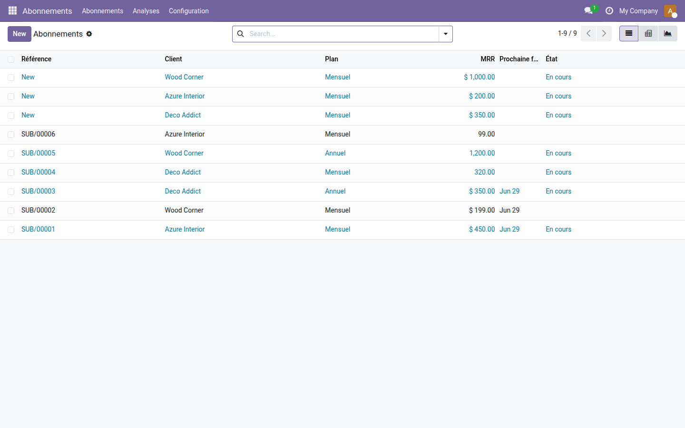
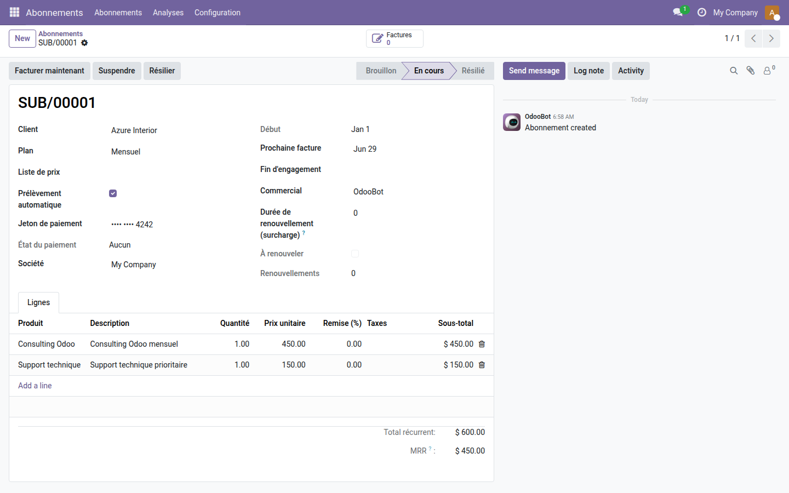
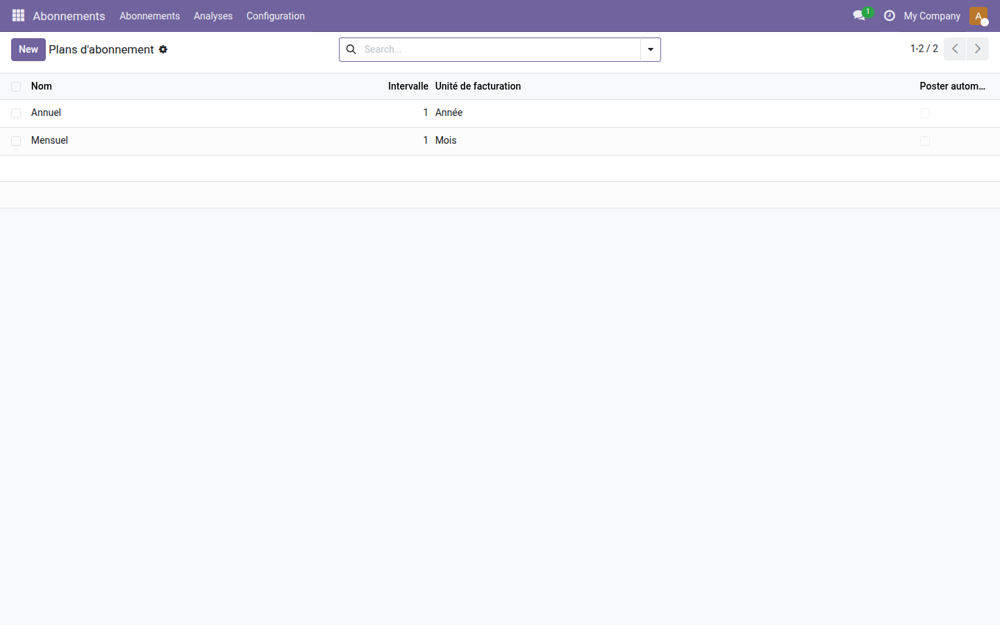

Abonnements — Oski
Facturation récurrente automatique pour Odoo 19 Community — sans module Enterprise.
Odoo Community ne propose pas de gestion native des abonnements : chaque mois, il faut créer les factures à la main, se souvenir des clients à relancer, et calculer à la calculette combien de revenus récurrents entrent réellement. Pour les éditeurs de logiciels, les prestataires de services ou toute entreprise avec des forfaits mensuels, cette friction coûte du temps — et des oublis qui coûtent de l'argent.
Ce que ça apporte
- 📅 Plans de facturation configurables — créez autant de plans que nécessaire (mensuel, trimestriel, annuel, ou tout autre rythme jour/semaine/mois/année) et réutilisez-les sur tous vos abonnés.
- ⚡ Facturation automatique par tâche planifiée — un cron génère (et, si activé, valide) les factures le jour J pour chaque abonnement actif dont l'échéance est atteinte, sans intervention humaine.
- 📊 MRR calculé automatiquement — le Revenu Mensuel Récurrent est normalisé quelle que soit la périodicité (quotidien, annuel…) et visible en liste, en tableau croisé et en graphique.
- 🔁 Cycle de vie complet — démarrer, suspendre, reprendre ou résilier un abonnement en un clic ; les dates de début, de prochaine facture et de fin d'engagement sont suivies automatiquement.
- ✅ Historique des factures lié — toutes les factures générées sont accessibles directement depuis la fiche abonnement, avec un compteur visible en haut de page.
- 🔒 Filtre « À facturer » — identifiez d'un clic les abonnements actifs dont la date de facturation est passée, pour lancer une facturation manuelle groupée si nécessaire.
En images
Vue d'ensemble : liste complète des abonnements avec MRR normalisé, plan de facturation et état (En cours / Résilié) en un coup d'œil.

Fiche abonnement : cycle de vie complet (Facturer, Suspendre, Résilier), plusieurs lignes de service, total récurrent et MRR calculé automatiquement.

Plans d'abonnement configurables : définissez l'intervalle et l'unité de facturation (Jour, Semaine, Mois, Année) pour chaque plan réutilisable sur tous vos abonnés.

Pourquoi l'adopter
- Gratuit et open source (LGPL-3) — zéro coût de licence, pas de dépendance externe, déployable sur votre instance Community sans restriction.
- Fonctionnalité habituellement réservée à Enterprise — la gestion des abonnements récurrents est native dans Odoo Enterprise ; ce module l'apporte nativement en Community sans coût supplémentaire de souscription.
- Extensible avec les add-ons Pro — ajoutez le tableau de bord MRR, le paiement récurrent en ligne, le portail abonné ou les workflows de renouvellement selon vos besoins (voir suite ci-dessous).
- Intégration native Odoo — s'appuie sur les modèles standards (res.partner, account.move, product.product) et le chatter pour la traçabilité ; aucune dépendance hors Odoo.
Fait partie de la suite Subscription Pro
Ce module est le cœur gratuit de la suite. Enrichissez-le avec :
- oski_subscription_dashboard — tableau de bord MRR, churn et ARR en temps réel.
- oski_subscription_payment — paiement récurrent automatique (carte, virement SEPA…).
- oski_subscription_portal — espace abonné sur le site pour consulter et gérer l'abonnement.
- oski_subscription_renewal — workflow de renouvellement et relances automatiques avant échéance.
Voir la suite complète sur apps.odooskills.com.
Licence LGPL-3 — compatible Odoo 19.0. Support : apps@odooskills.com.